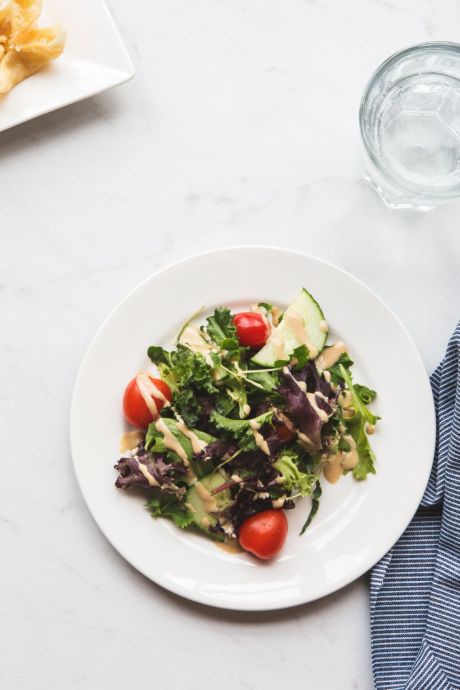

Some dinners solve a problem. Others change the entire temperature of a day. Breakfast for dinner does both.
It asks almost nothing from you except a willingness to ignore the clock. There is no performance involved, no elaborate shopping list, and very little that cannot be rescued with maple syrup or a fried egg.
Permission to play
A stack of pancakes at night feels different from the same stack at nine in the morning. It feels mischievous. It turns an ordinary Tuesday into a tiny occasion and makes the kitchen feel less like a place of obligation.
Breakfast for dinner is not really about breakfast. It is about giving yourself permission to change the plan.
That freedom is the useful part. Toast can become a full meal. Leftover vegetables can sit under a soft egg. Fruit, yogurt, and something crunchy can be dinner when dinner is simply not going to happen.

Comfort on demand
Breakfast foods are built from familiar ingredients and short paths to satisfaction. Butter hits a warm pan. Coffee is made even though it is late. Everyone gets to choose sweet, savory, or—correctly—both.
The result is generous without being grand. It can feed one person standing at the counter or six people talking over one another around a crowded table.
Where to start
- Make one thing crisp: toast, potatoes, or the edges of a pancake.
- Add something bright: citrus, berries, herbs, or hot sauce.
- Put everything in the middle and let people help themselves.
Then stop worrying whether it counts as a proper dinner. If everyone leaves the table happier, it counted.